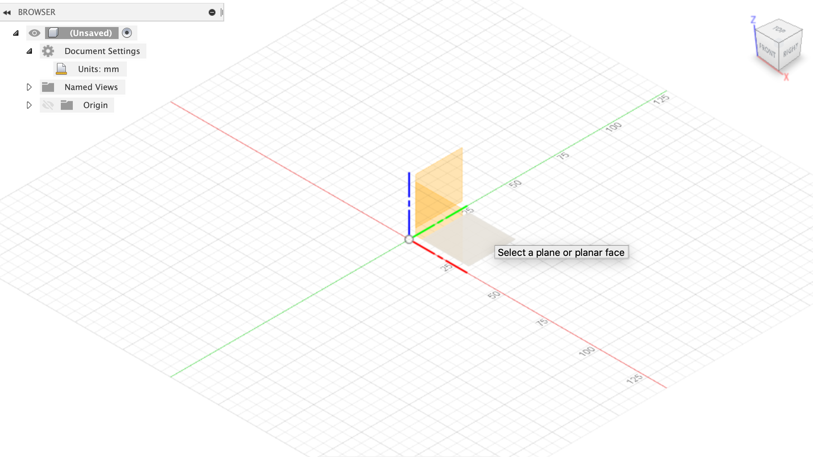
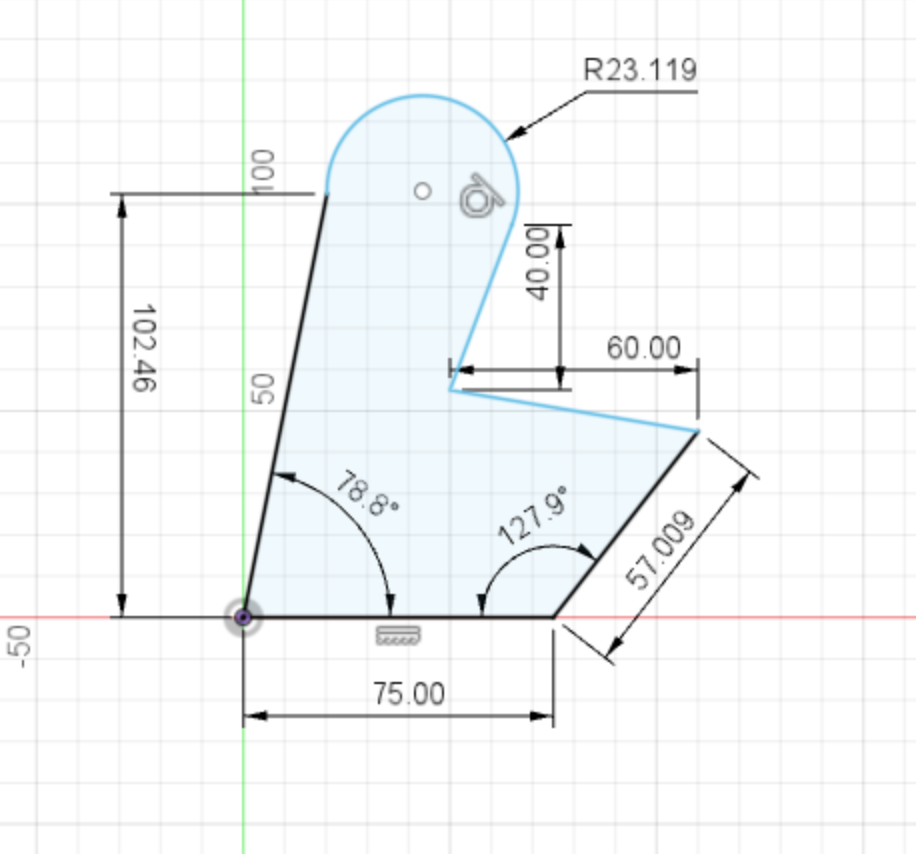

This week my partner Andrew and I worked on a press-fit kit! We decided to make a truncated icosahedron (aka a soccer ball) out of laser cutted 2D cardboard shapes. Visit his website to learn more!
Here are some pictures of the final result:
I also learned more about Fusion 360 this week by working through a Fusion 360 tutorial.
This Fusion 360 Tutorial for Beginners teaches set units, creating a line with an arc, dimension, construction line, circle, apply constraint, trim, ellipse, zoom, pan, undo, and redo.
I learned how to change units by clicking “Document Settings” then “Units” to change the active units:
I then started a sketch by clicking “Create Sketch” and a plane to start the sketch on:
I started making a sketch using the line and arc settings to make an enclosed shape, and then added dimensions to the shape using the “Sketch Dimension” setting:
The tutorial then showed me how to make two reference lines by making lines and setting them to the “Construction” linetype. I drew circles around the constructed lines and then drew a line between the two circles that was tangent to the right circle. In order to make the line tangent to both circles, I clicked the left circle, the line, and used the tangent constraint in the “Constraints” tab.
I also learned how to use the “Mirror” setting to mirror a line across a reference line:
Finally, I used the “Trim” setting to trim lines and curves from a shape:
Finally, I modeled two components from my PS70 kit.